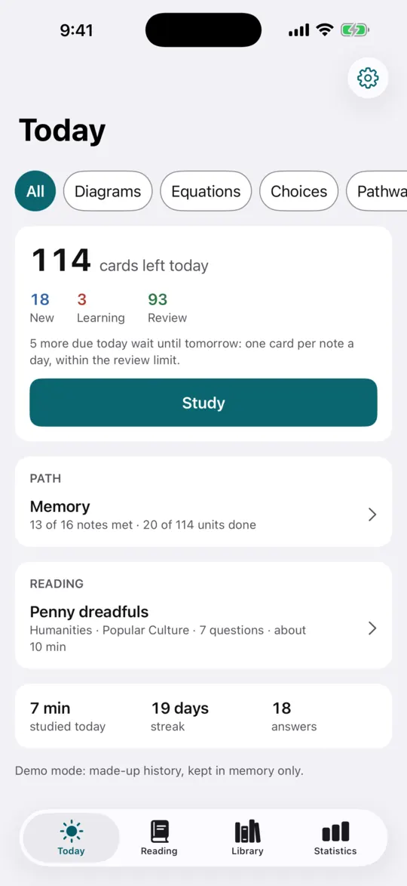
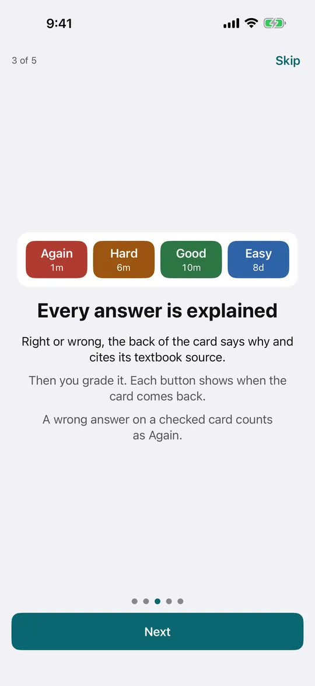
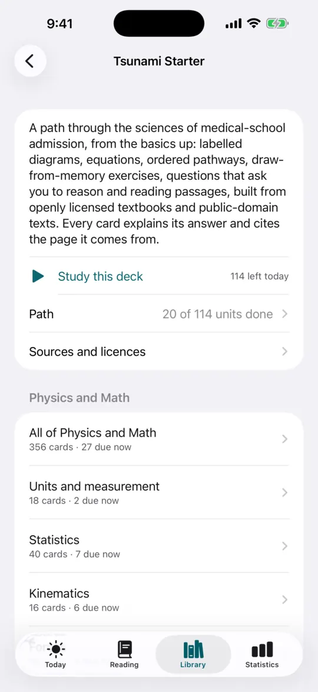
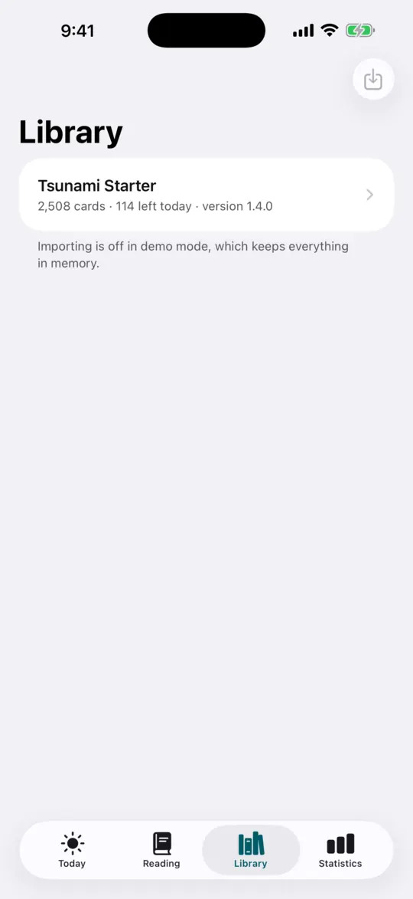
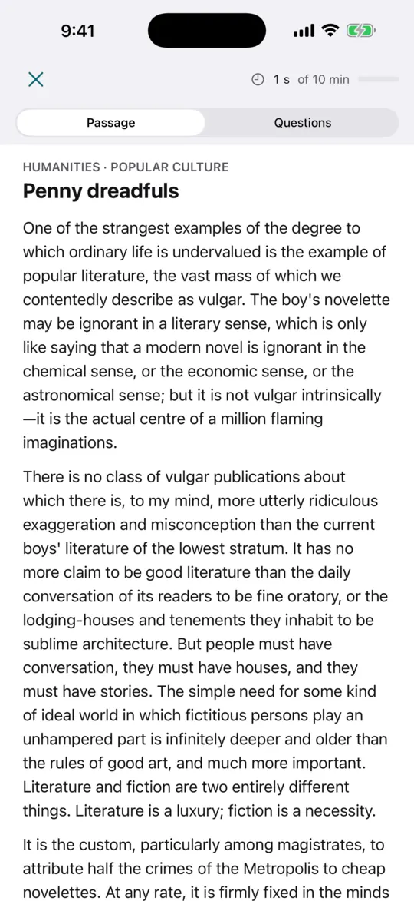

A tour
Today
One screen says what the day holds: the cards due for review, the new ones the path suggests, and one button, Study. A session is one card at a time; you answer by touch, read the explanation and grade yourself with one of four buttons, each showing when the card will return.
The way each kind of card is answered is on the home page.


The path and the deck
The built-in deck has 2,595 cards in 114 units, in teaching order. The path shows where you are; finished units are ticked. You can also open the deck by section and topic and study any unit right now, on top of the day's suggestion, without moving your place on the path.


Statistics
What you did today, your streak, a calendar of the last 26 weeks, the reviews coming in the next 30 days and how much you remember. It reports; it does not push.
Your own decks
The library lists the built-in deck and any deck you open from Files or AirDrop in the same open format. Progress can be exported as a file and restored.


Reading
36 passages from the humanities and the social sciences, each with questions, in a rotation of their own: the next one is always one you have not read. A clock counts up beside a ten-minute mark and stops nothing. On an iPad the passage stands beside its questions.


Also
iPhone and iPad, light and dark, the system's larger text sizes, VoiceOver labels on every control, and Apple Pencil or a finger for drawing. Why it is built this way.